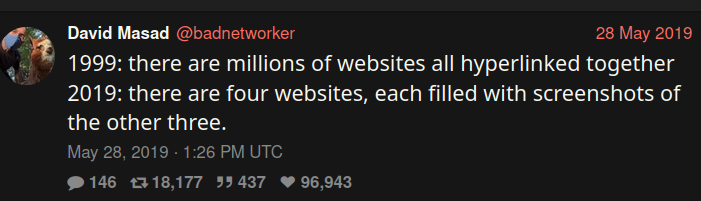

Fruity Owl
The internet
The internet has never had a center. It started when two computers were connected together, and expanded as more machines were added.
In essence, all those machines are equal. Some are large, like the university mainframes that were the first computers on the internet, or the servers in data centers, and some are small, like your phone. But each machine that's connected to the internet is in principle able to function as a server (like hosting a website), or as a client (like browsing a website), or a network router, though some machines are more fit for some roles than others.
In addition to this, the internet is also very resilient. Because many different routes can be made between your machine and a machine on the other side of the world, if one of the routers in between gets disconnected, the network will send your packages through a different route, and you probably wouldn't even notice.
A centralised internet
The decentralised character of the internet is what makes it so powerful. It makes it very difficult for someone to prevent you from accessing a specific web service without preventing your access altogether.
 One of the ways someone can try to prevent you from accessing a website is by blocking a service's DNS. This becomes a bigger problem as a larger more of the internet is hosted on fewer domains.
Since domain names have to be unique, they are centrally registered. And while there are multiple DNS servers and a lot of redundancy built into the system, it remains controlled by a central authority, and in a way a single point of failure.
Another way in which the internet is not very decentralised, is that large parts of the internet run on the servers of a few large cloud platforms. But if a cloud platform decides to evict your website from their servers, you can always move it to a different server.
In order to be able to move to a different server, it is important that you can use the same tools you had on the original platform. To do this, it helps if the tools you use are free software.
Another important condition is that the server to which you move your website is treated the same by the internet service providers. If an ISP runs a competitor to your website, they may be motivated to sabotage your website by making it slower for their clients. That's why it's important to have network neutrality.
The Fediverse
The fediverse is a collection of protocols, applications, servers, websites, and people that function in a decentralised way. The idea of the fediverse is that there is not a central entity, such as Twitter or TikTok at the center of social interaction, but a whole network of independent yet interconnected, i.e. federated services.
A concrete example of federation, that anyone using the internet is familiar with, is email. Email is not a website or a company, but a protocol (or rather a set of protocols). There are different servers with different hostnames that provide email, and you don't need to be on the same server to send emails to other people. You can use web interfaces or different mobile applications to access your email, and with enough know-how you can set up your own email server that federates with other servers.
A large part of the fediverse uses ActivityPub. This includes Mastodon (similar to Twitter), Lemmy and kbin (similar to Reddit), Pixelfed (similar to Instagram), PeerTube (a video platform), and many more.
When you are on one Mastodon server (instance), you can interact with people on a different instance. But because these platforms all use ActivityPub, you can even interact with Pixelfed or PeerTube users. Some protocols don't use ActivityPub, such as Matrix (secure chat platform) can't interact with other platforms, but some platforms, such as Diaspora*Can interact with certain ActivityPub platforms.
When looking at for example the Join Mastodon website, you'll often see a list of servers and a list of apps, because everyone can add a server or create an app to interact with the network. Mastodon even allows you to move your contacts to an account on a different server.
Fruity Owl
So why does this web page look like this? For no other reason than that it reminds me of what the internet was before big money had entered the space, and decided what good web design looks like, while also not throwing everything out that we learned along the way.
The logos at the top represent two cherries and an owl for no particular reason, other than that it goes with the name Fruity Owl.
Links
Other interesting links
- Spritely Institute - Some of the creators of ActivityPub building the next generation of decentralized networking technology
- Actually, it’s about Ethics in Transgenderism (2024) - Dive deep into some of the culture and drama of the Fediverse
- Bartosz Ciechanowski's Blog - Beautiful interactive explanations of different topics like mechanical watches and airfoils
- Xenofeminism (2015) - Practice your English